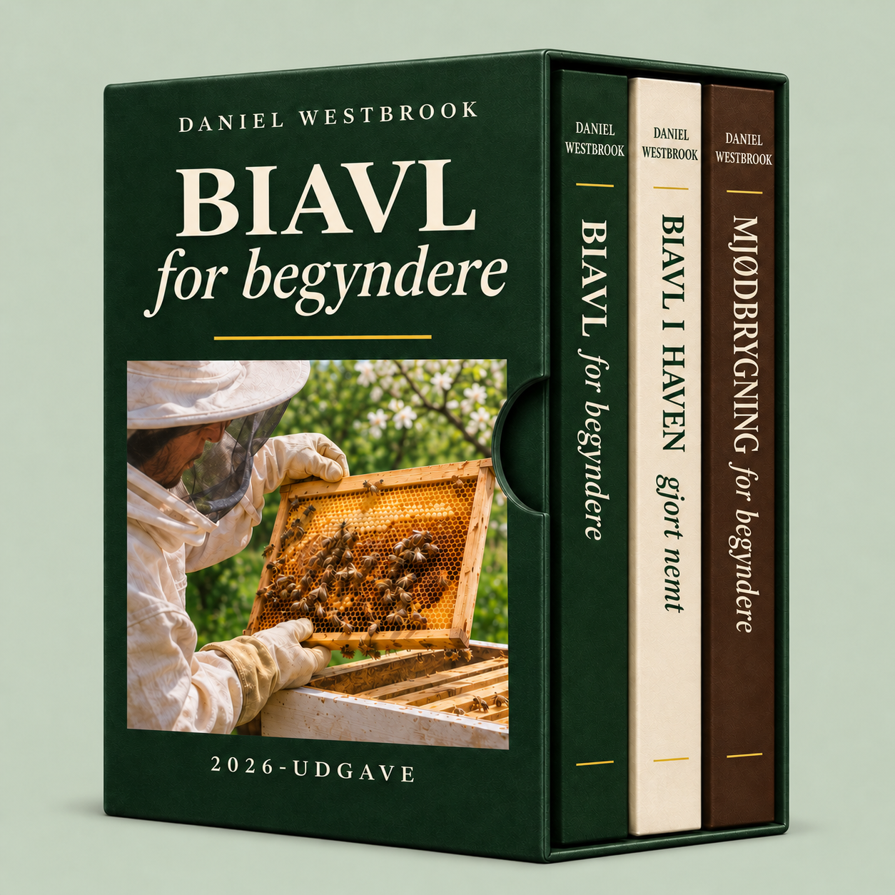

SAMLINGEN AF DANIEL WESTBROOK
Fra din første bifamilie til din egen honning.

Forstå. Iagttag. Udvikl dig.
DIT MEDLEMSOMRÅDE
Din tid
Din tid
med bierne
begynder her.
Dejligt, at du er her. Oplev biernes verden med viden, der følger dig fra første skridt.
DIT PERSONLIGE BIBLIOTEK
Åbn mit medlemsområde
Forstå grundlaget. Hold bier i din egen have. Oplev kunsten at brygge mjød.
Læs alle tre bøger direkte, eller hent dem som PDF.
- 3
- Bøger
- 180
- sider med viden
- Dit tempo
- For begyndere